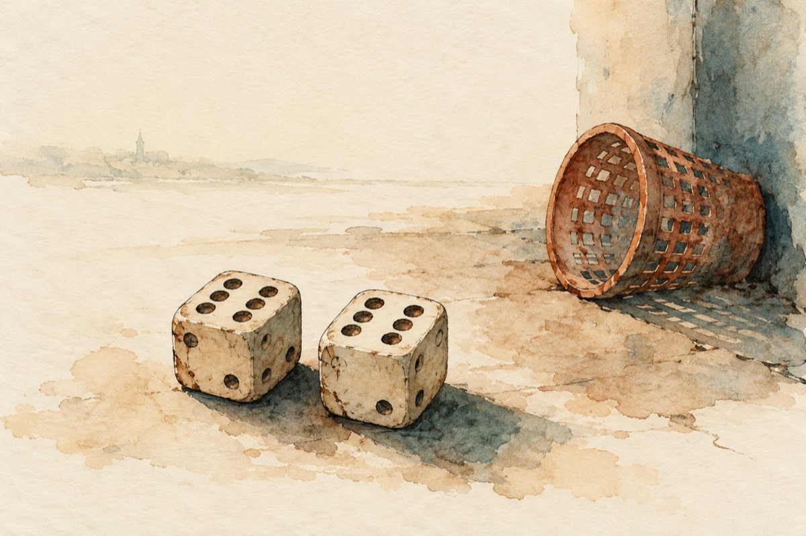

Zarurile
Zarurile-au fost aruncate
Nu în sus, ci la gunoi
Și de-aici au fost luate
La scorul de doi la doi!
Asta-nseamnă că-i o dublă
Și se pune întrebarea
Câștigă sau nu câștigă?
Depinde de următoarea!
Patru patru a ieșit
E normal că-a câștigat
Dar cinci la cinci s-a nimerit
Și câștigul s-a mutat
S-a mutat dar nu acasă
Că mai e o tragere
Și-a venit un șase șase,
Iar câștigul, acesta e !…
A rămas cu zarurile.
Vasile Groza